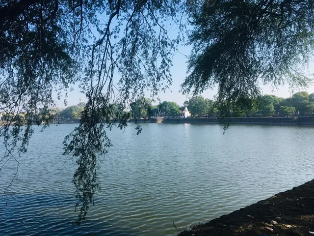
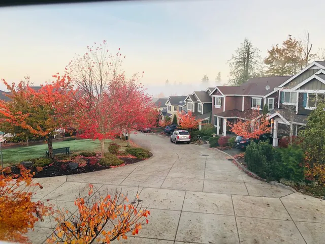
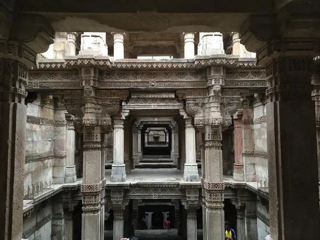

Places
I was born in Nagpur, a serene city in India, and grew up listening to the Itihasas (historical texts) and Puranas (folklore). They made me self-aware and conscious of my existence from a young age, and they are why I like talking to people and visiting new places: to discover my role in the greater plan of nature. It has always been my dream to travel widely and observe different traditions, people, and ways of living. Along the way, I also took up trekking.
Shoot me a message anytime if you'd like to talk about anything! I'd love to chat over a cup of coffee 😊





